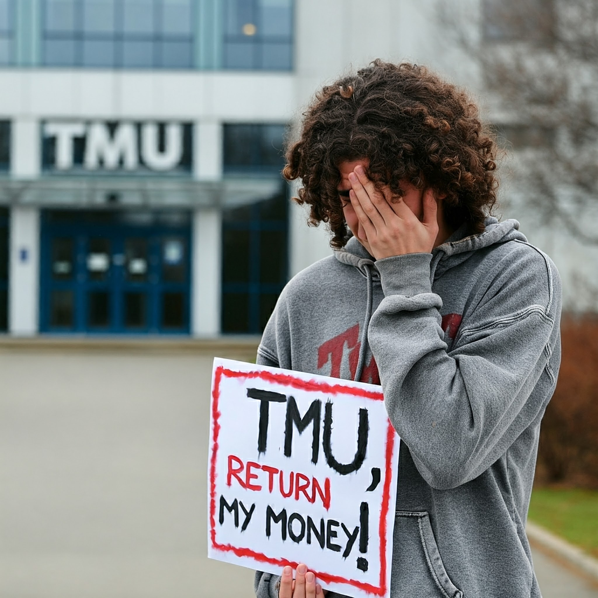

Background: Tuition Payment and Visa Process
Por, a student in TMU’s Master of Digital Media (MDM) program, initially intended to begin his studies in January 2024. However, due to delays in his visa processing, he deferred his start date to September 2024. Starting in November 2023, Por paid over $27,000 in tuition fees in advance to secure his visa, using this payment as proof of funds for his application.
In September 2024, Por discovered that TMU had mistakenly charged him $223 for UHIP, a mandatory health insurance plan for international students in Canada. Despite not being in Canada during the January term, he was billed for this fee. After realizing the error, Por requested a refund from the university, but TMU declined, citing that too much time had elapsed since the charge was made.
This situation resulted in Por’s tuition for his third semester being short by $223. He opted not to pay this amount, believing it was the university’s responsibility to correct the mistake and refund the UHIP fee. His decision not to cover the difference ultimately led to his expulsion.
Por's Legal Action
Por’s lawsuit against TMU asserts that the university's refusal to refund the $223 UHIP fee directly contributed to his expulsion. He argues that he should not be held responsible for a fee charged while he was still outside of Canada and that TMU’s failure to address the issue has imposed an undue financial burden on him. His legal action highlights the challenges faced by international students as they navigate complex systems of fees and university policies.
Legal Commentary on Por's Actions
From a legal perspective, Por’s choice to withhold payment for the UHIP fee raises significant questions regarding contractual obligations and the university's duty of care to its students. Legal expert Sarah Johnson states, "Por's case will depend on whether the university can be held accountable for its administrative errors. If it can be shown that TMU incorrectly billed him while he was not in Canada, he may have a valid argument for breach of contract or unjust enrichment."
Johnson further emphasizes that while Por's decision may appear deliberate, his intention to resolve the issue rather than simply defaulting on payment could be beneficial to his case. "His proactive approach in seeking a refund indicates he was acting in good faith," she adds, noting that this may mitigate any claims against him for non-payment.
Regarding the likelihood of success in Por's lawsuit, Johnson believes it hinges on several factors. "If Por can provide clear evidence of the university's billing error and demonstrate that it directly led to his expulsion, he stands a reasonable chance of prevailing in this case." However, she also warns that universities often have robust legal defenses. "I would estimate his chances of success at around 50-60%, depending on the evidence presented and the university's response to the claims."
Public Response: Growing Concerns
The case has prompted considerable criticism from various members of the public, many of whom express frustration over TMU’s handling of the situation. Rachel Li, a spokesperson for an international student advocacy group, remarked, “This situation highlights ongoing challenges that universities face in supporting international students. TMU’s refusal to refund what appears to be an erroneous charge raises concerns about empathy and accountability.”
John Peterson, a university policy expert, noted, “International students contribute significantly to Canadian universities, yet situations like this raise serious questions about how institutions manage their needs once they enroll. A reevaluation of dispute resolution processes is necessary to maintain trust and reputation.”
Recommendations for TMU: Taking Action
In light of the public outcry and ongoing legal action, TMU should consider implementing proactive measures to restore trust and improve its handling of issues related to international students. Recommendations include:
- Establish clearer refund policies.
- Enhance support systems for international students.
- Increase transparency and accountability in administrative processes.
- Engage meaningfully with the student community.
Conclusion
As Por’s lawsuit progresses, it will serve as a critical test of TMU’s accountability to its international students and may set important precedents for how similar cases are addressed in the future. With public interest and legal scrutiny surrounding his case, Por's pursuit of justice may not only impact his academic future but also initiate broader discussions on student rights and institutional responsibilities.